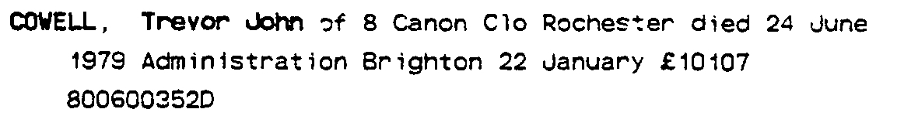
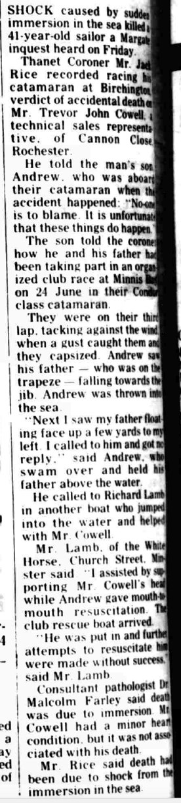
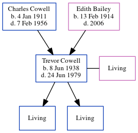

Trevor John Cowell 1938 - 1979
[ Home ] | [ Calendar ] | [ Surnames Index ] | [ Errors ] | [ Family History ]The older of 2 children of Charles Cowell (a lorry driver) and Edith Bailey, Trevor Cowell, a cousin on the mother's side of Nigel Horne, was born in Thanet, Kent, England on 8 Jun 19381,2,3,4 and. He married Muriel Knox (with whom he had 2 surviving children Charles J and Andrew J) in Thanet around Aug 19595.
During his life, he was living at Sunnymeade, Monkton Road, Minster in Thanet on 29 Sept 19391; at 26 Prospect Road, Birchington, Kent, England in 19637 and in 19656; and at 8 Canon Close, Rochester, Kent in 1979.
He died on 24 Jun 1979 in Thanet4 (drowned while trying to save his son's life).
Parents
- Charles John was born on 4 Jan 1911
- Edith Mary was born on 13 Feb 1914
Citations
- 1939 Register - Findmypast (was the son of the head of the household)
- England & Wales deaths 1837-2007 - Findmypast
- England & Wales, Birth Index: 1916-2005 Online publication - Provo, UT, USA: The Generations Network, Inc., 2008.Original data - General Register Office. England and Wales Civil Registration Indexes. London, England: General Register Office. © Crown copyright. Published by permission of the Cont
- England & Wales, Death Index: 1984-2005 Online publication - Provo, UT, USA: The Generations Network, Inc., 2007.Original data - General Register Office. England and Wales Civil Registration Indexes. London, England: General Register Office. © Crown copyright. Published by permission of the Cont
- England & Wales, Marriage Index: 1916-2005 Online publication - Provo, UT, USA: The Generations Network, Inc., 2009.Original data - General Register Office. England and Wales Civil Registration Indexes. London, England: General Register Office. © Crown copyright. Published by permission of the Cont
- 1965 Kelly's Thanet Directory
- 1963 Kelly's Thanet Directory
Media
Trevor John Cowell - probate

Thanet Times - 10 Jul 1979

Thanet Times - 27 Aug 1979

1965 Kelly's Thanet Directory

1963 Kelly's Thanet Directory

England & Wales marriages 1837-2008 - BMD/M/1959/3/AZ/000323/122
England & Wales births 1837-2006 - BMD/B/1938/3/AZ/000243/134
England & Wales deaths 1837-2007 - BMD/D/1979/3/AZ/000202/079
1939 Register Transcription - TNA-R39-1820-1820E-019-32
1939 Register Transcription - TNA-R39-1820-1820E-019-31
1939 Register Image - TNA-R39-1820-1820E-019
Family Tree
Map
Generated by ged2site. Last updated on Jul 3, 2024
Known Issues
Residence record for 1979 contains no citation
Listed in the residence for 1963, but spouse Muriel Knox is not
Listed in the residence for 1965, but spouse Muriel Knox is not
Listed in the residence for 1979, but spouse Muriel Knox is not